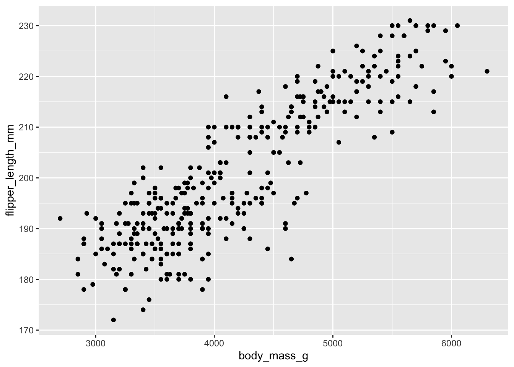

library(palmerpenguins)
library(tidyverse)
traits_r2 <- function(trait1, trait2) {
summary(lm(trait1 ~ trait2))$rsquared
}
penguins %>%
summarize(flipper_bill_r2 = traits_r2(flipper_length_mm, bill_length_mm))Week 6 - Wrap up skills portion
Student learning objectives
Use
browser()to diagnose an error in a pipelineCreate figures using
ggplotChoose papers and figures/tables for final project
Debugging with browser()
Review of Week 5. Begin by creating a new project for Week 6.
What does browser() do?
Write down what you remember about browser(). Turn to a partner and compare notes. I will call on pairs to share.
Error in summarize()
The following pipeline has an error. Use it to answer the following questions.
Q1: How would you describe the error? I’m not asking you describe the cause of the error yet. Describe how the output is different than what you would expect.
Q2: Where would you add browser() to explore the cause of the error?
Q3: Does the body of traits_r2 use list or atomic vector indexing? Does it use indexing by position, logic, or name?
Q4: What’s the cause of the error? How would you fix it?
Adding group_by()
The following pipeline is similar to the one above, with an added layer of complexity. Use it to answer the following questions.
# Pipeline 1
penguins %>%
group_by(species) %>%
summarize(flipper_bill_r2 = traits_r2(flipper_length_mm, bill_length_mm))
# Pipeline 2
penguins %>%
group_by(species, island) %>%
summarize(flipper_bill_r2 = traits_r2(flipper_length_mm, bill_length_mm),
.groups = "drop")Q5: How many times does Pipeline 1 call traits_r2()? How about Pipeline 2?
Q6: Create Pipeline 3 that additionally groups by sex. How many times does Pipeline 3 call traits_r2()?
Error in group_by()-summarize()
The following code creates an error in Pipeline 3. Change your Pipeline 3 to use penguins2 instead of penguins, then answer the following questions.
set.seed(12345)
penguins2 <- penguins %>%
drop_na(sex) %>%
sample_n(25)
penguins2[7, 3:6] <- NAQ7: How would you describe the error?
Q8: Use browser() to diagnose the error. Hint: c will tell the debugger to continue until the next time it’s called.
Q9: How would you fix the error?
Visualizing data with ggplot()
This is a basic introduction to data visualization with ggplot(), which should come in handy when you’re creating figures for your final projects.
Components of ggplot()
ggplot() has four major components:
Data
Scales
Geometries
Aesthetics
Data
A data frame containing the data you want to visualize. Emphasis on data frame. ggplot() is not designed to work with individual vectors, which you might be used to if you’ve used base R, Matlab, or other plotting tools.
Scales
Scales determine where/how variables in your data will show up in the plot. These include the x- and y-axes, as well as color, size, and more.
Geometries
Geometries determine the geometric properties of your variables. E.g. scatter plots use a point geometry and line plots use a line geometry. Other familiar geometries include histograms and box plots.
Aesthetics
The aesthetics unify data, scales, and geometries. They tell ggplot() how to translate data to scales for each geometry.
A simple example
library(palmerpenguins)
library(tidyverse)
ggplot(data = penguins, aes(x = body_mass_g, y = flipper_length_mm)) +
geom_point()
head(penguins)# A tibble: 6 × 8
species island bill_length_mm bill_depth_mm flipper_length_mm body_mass_g
<fct> <fct> <dbl> <dbl> <int> <int>
1 Adelie Torgersen 39.1 18.7 181 3750
2 Adelie Torgersen 39.5 17.4 186 3800
3 Adelie Torgersen 40.3 18 195 3250
4 Adelie Torgersen NA NA NA NA
5 Adelie Torgersen 36.7 19.3 193 3450
6 Adelie Torgersen 39.3 20.6 190 3650
# ℹ 2 more variables: sex <fct>, year <int>| Data | Scales | Geometries | Aesthetics |
|---|---|---|---|
penguins |
x, y |
geom_point() |
|
First parameter of ggplot() |
Implied by aes() |
Added to ggplot() |
Defined by aes(), second parameter of ggplot() |
Q10: Change the aesthetics of the plot to show bill_depth_mm on the y-axis.
Q11: Add an aesthetic for color, so points will be color-coded by species.
Customizing scales
In addition to adding geometries with geom_*(), we can add scales with scale_*_*() to customize how scales appear in the figure. The first * is the name of the aesthetic, and the second * is the type of scale.
ggplot(data = penguins) +
# You can also define aesthetics directly inside the geometries
geom_point(aes(x = body_mass_g,
y = flipper_length_mm,
color = species)) +
# x aesthetic, continuous scale
scale_x_continuous(
# change the axis name
name = "Body mass (g)",
# change the limits
limits = c(2000, 8000)
) +
# color aesthetic, manual scale
scale_color_manual(
# set the values for the colors
values = c(Adelie = "cornflowerblue",
Chinstrap = "firebrick",
Gentoo = "darkorchid")
)Q12: What function would you use to customize the y-axis? Use that function to expand the y-axis limits to include 150 and 250.
Q13: Look up the help for scale_color_brewer(). Change the color scale to use the “Dark2” color palette.
Other useful geometries
Q14: Use geom_histogram() to visualize the distribution of body masses.
Q15: Use geom_boxplot() to create boxplots of the flipper lengths by species. It should look like the figure below. Hint: what aesthetics will you use?

Q16: geom_pointrange() is like geom_point() with the addition of error bars. Like geom_point(), geom_pointrange() takes x and y aesthetics, but it also takes xmin, xmax, ymin and ymax aesthetics. Create a figure that shows the mean \(\pm\) sd of each penguin species’ body mass and flipper lengths using points and error bars; it should look like the figure below. First, create a summary data frame that calculates the mean and standard deviation of the two variables you need by each species. Then use that summary data frame to create your figure. Hint: geom_pointrange() takes xmin or xmax, same for ymin or ymax. So you’ll need to call geom_pointrange() twice and specify the aesthetics within the geometry.
Wrapping up
We’ll use the remainder of class today to get caught up on the Week 2-4 assessments.